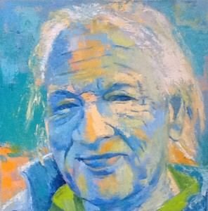

Wetenschap

Jaap Gerritsma, geboren op 9 september 1942 in Eindhoven, ging na zijn studie sociologie in de jaren zeventig en tachtig werken aan de Medische Faculteit van Utrecht waar hij zich toelegde op de methodiek van het geneeskundig onderwijs. Hij was een van de grondleggers van het gebruik van simulatietechnieken in de opleiding van artsen en schreef boeken over dat onderwerp en andere thema's zoals attitudevorming, probleemoplossing en probleemgestuurd onderwijs
- Grens verschuivingen in het Medisch Onderwijs, Utrecht: Oosthoek, Scheltema&Holkema, 1974( Samen met J.A. Smal)
- Simulatie van patiënten in het onderwijs, Schriftelijke oefeningen in Huisartsgeneeskunde, Utrecht: Bohn Scheltema&Holkema, 1977 (Samen met J. van Es, J. Koopman en J.A. Smal.
- Oplossen van problemen. Utrecht: Het Spectrum. Aula paperback, 1986. (Samen met C. Mettes)
- Problem based learning in Leprosy and Tuberculosis. Amsterdam 2001: online als e-book: jaapgerritsma.nl/pbl. (Samen met E. Parry, G. Alabi, en R. Verduin.)
Hij promoveerde cum laude op:
- De werkwijze van huisarts en internist. Een vergelijkend onderzoek met behulp van een interactieve patiëntensimulatie. Utrecht: Wetenschappelijke uitgeverij Bunge, 1982. (Samen met J.A.Smal).
Daarnaast schreef hij veel artikelen voor nationale en Internationale tijdschriften.
Eind jaren tachtig was Jaap Gerritsma in de Verenigde Staten als Very Distinguised Visiting Professor verbonden aan Michigan State University (vakgroep Omerad) waar hij meewerkte aan de ontwikkeling van Certifying Examinations van de National Board of Emergency Medicine. In de jaren negentig werkte hij als freelancer voor de Nederlandse Stichting voor Leprabestrijding dat hij combineerde met de functie van Honorairy Senior Lecturer aan de universiteit van London. (London School of Hygiene and Tropical Medicine)
In Afrika (Nigeria en Ethiopië), Azië (Indonesië, Thailand en China) hielp hij mee aan de opzet van trainingsprogramma's om lepra uit te bannen en verzorgde diverse docentenopleidingen.
Het laatste jaar is hij betrokken bij Intervoice, de internationale organisatie voor de belangenbehartiging van stemmenhoorders voor de ontwikkeling van speciale cursussen voor psychiaters, psychologen, stemmenhoorders en andere belanghebbenden.
Naast onderwijs en onderzoek ontstond er steeds meer belangstelling voor populariserend schrijven en volgde hij voor dit doel cursussen aan de School voor Journalistiek in Utrecht. Jaren publiceerde hij columns onder de namen Uncle Sam MD, Meester Dokter, Tjeb de Gier en How tot teach teachers to teach in Leprosy voor het blad Medisch Contact in de jaren ’80 en ’90.